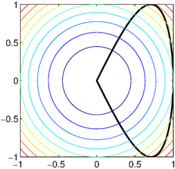
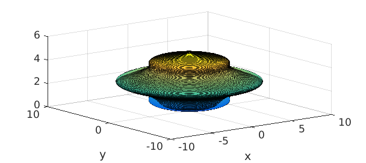
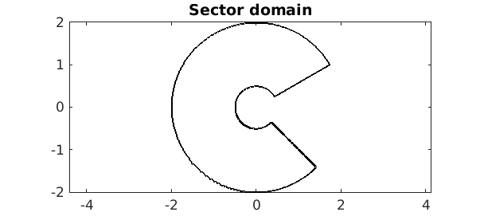
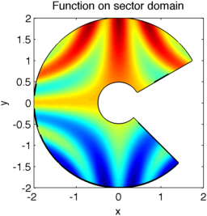
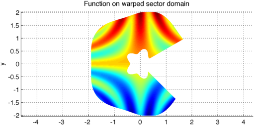
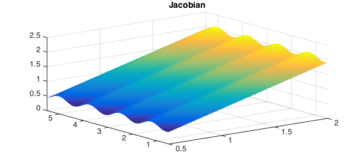
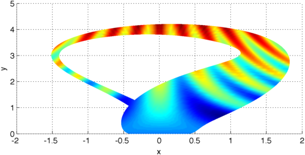
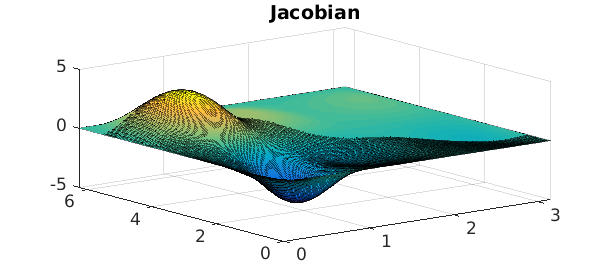

LW = 'linewidth'; lw = 2; FS = 'fontsize'; fs = 14; MS = 'markersize'; ms = 20;
The Chebfun2 constructor and rectangular domains
The Chebfun2 constructor performs a continuous analogue of Gaussian elimination with complete pivoting on matrices, and hence is inherently tied to sampling a function at adaptively selected tensor grids. Note that the grids are carefully selected so the complexity is reduced for low rank functions [5]. However, we can still represent functions on non-rectangular domains using Chebfun2 by employing mappings. In this Example we explore Chebfun2 on a few non-rectangular domains.
What can Chebfun2 do already?
You may be surprised to learn that Chebfun2 can already do some operations on non-rectangular domains. For example, Chebfun2 can calculate the volume of a simple function on an arbitrary domain with prescribed boundary:
f = chebfun2(@(x,y) x.^2 + y.^2);
c = chebfun(@(t) cos(pi*t) + 1i*sin(2*pi*t),[-.5 .5]);
plot(c,'k',LW,lw), hold on, contour(f), axis equal tight
fprintf('Volume enclosed by curve = %1.3f\n',integral2(f,c))
Volume enclosed by curve = 0.838

Chebfun2v objects can also represent surfaces. Of course, these surfaces must be expressed in terms of a rectangular coordinate system. For example, we can take a chebfun and revolve it around the z-axis:
clf f = chebfun(@(x) x.*(5-x) + sin(pi*x),[0 5]); F = cylinder(f); surf(F)

We can even represent and manipulate functions on such surfaces. See, for example, [2,3,4] and Chapter 15 of the Chebfun Guide.
Sector domain
Sector-shaped domains are rectangular when parametrised by polar coordinates $r_1\leq r\leq r_2$, $\theta_1\leq \theta \leq \theta_2$, and thus functions on these domains can be easily represented using Chebfun2. For example, take the following sector:
t1 = pi/6; t2 = 7/4*pi; r1 = 1/2; r2 = 2;
t = chebfun('t',[t1 t2]); r = chebfun('r',[r1 r2]);
sector = join(r2*exp(1i*t),r1*exp(1i*t),r*exp(1i*t1),r*exp(1i*t2));
plot(sector,'k',LW,lw), axis(2*[-1 1 -1 1]), axis equal, hold on,
title('Sector domain',FS,fs)

We can represent functions on such a sector by introducing polar coordinates:
r = chebfun2(@(r,t) r,[r1 r2 t1 t2]);
t = chebfun2(@(r,t) t,[r1 r2 t1 t2]);
[x,y] = pol2cart(t,r);
f = cos(5*x.*y) + y;
surf([x;y;f]), zlim([-5 5])
title('Function on sector domain',FS,fs)

Since the Jacobian of the change of variables is well-behaved we can, for example, calculate the integral of $f$ over the sector domain:
integral2(f.*jacobian([x;y]))
ans = 0.816092631378351
Warping the sector domain
Moreover, we can represent functions on more general domains such as the following warped sector domain:
clf
r = chebfun2(@(r,t) r + .1*cos(5*t),[r1 r2 t1 t2]);
t = chebfun2(@(r,t) t,[r1 r2 t1 t2]);
[x,y] = pol2cart(t,r);
f = cos(5*x.*y) + y;
surf([x;y;f]), view(0,90), axis equal, hold off
title('Function on warped sector domain',FS,fs)

Even for this warped sector domain the Jacobian is nonzero everywhere and computing with the function using the implicit change of variables is possible:
plot(jacobian([x;y])), title('Jacobian',FS,fs)

Shadow of a Klein bottle
Even further, we can represent the same function on the shadow of the 3-dimensional immersion of the Klein bottle:
clf
u = chebfun2(@(u,v) u, [0 pi 0 2*pi]);
v = chebfun2(@(u,v) v, [0 pi 0 2*pi]);
x = -(2/15)*cos(u).*(3*cos(v)-30*sin(u)+90*cos(u).^4.*sin(u)- 60*cos(u).^6.*sin(u)+5*cos(u).*cos(v).*sin(u));
y = -(1/15)*sin(u).*(3*cos(v)-3*cos(u).^2.*cos(v)-48*cos(u).^4.*cos(v)+48*cos(u).^6.*cos(v)-60*sin(u)+5*cos(u).*cos(v).*sin(u) ...
-5*cos(u).^3.*cos(v).*sin(u)-80*cos(u).^5.*cos(v).*sin(u)+80*cos(u).^7.*cos(v).*sin(u));
f = cos(5*x.*y) + y;
surf([x;y;f]), view(0,90)

However, in this case the Jacobian becomes singular and most operations on the rectangular domain become meaningless:
plot(jacobian([x;y])), title('Jacobian',FS,fs)

The significance of conformal maps
A conformal map is a holomorphic function whose derivative does not vanish (hence it preserves angles). This can be seen as a special case of a change of variables. While conformal maps can be used, they are not essential for extending Chebfun2 to non-rectangular domains.
Method of frames
For a different approach to representing functions on non-rectangular domains see [1].
References
-
D. Huybrechs, Computing with functions on non-rectangular domains, Chebfun and Beyond Workshop, http://www2.maths.ox.ac.uk/chebfun/and_beyond/programme/abstracts/huyb.shtml September 2012.
-
R. Platte, Parametric Surfaces, Chebfun2 Example, http://www2.maths.ox.ac.uk/chebfun/examples/geom/html/ParametricSurfaces.shtml March 2013.
-
R. Platte, The volume of a torus, a heart, and a seashell, Chebfun Example, http://www2.maths.ox.ac.uk/chebfun/examples/geom/html/VolumeOfHeart.shtml March 2013.
-
A. Townsend and L. N. Trefethen, An extension of Chebfun to two dimensions, SIAM Journal on Scientific Computing, 35 (2013), C495-C518.
-
A. Townsend, Undergraduate multivariable calculus, Chebfun2 Example, http://www2.maths.ox.ac.uk/chebfun/examples/veccalc/html/UndergraduateCalculus.shtml March 2013.